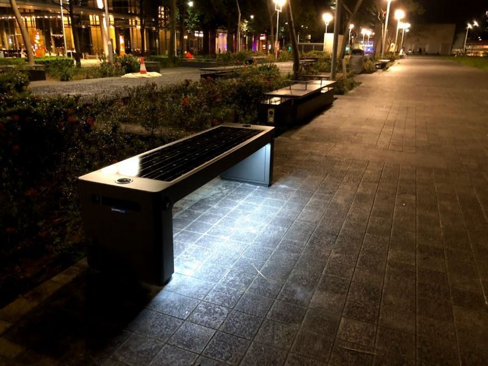

Maintenance & repair
Downtime costs you. We aim to address repair and maintenance queries within 3 to 4 business days, with same-day fixes where possible.
- Contact us to arrange an inspection and diagnosis
- Our engineer investigates and advises the recommended fix
- Same-day repair where possible, or a scheduled fix date
